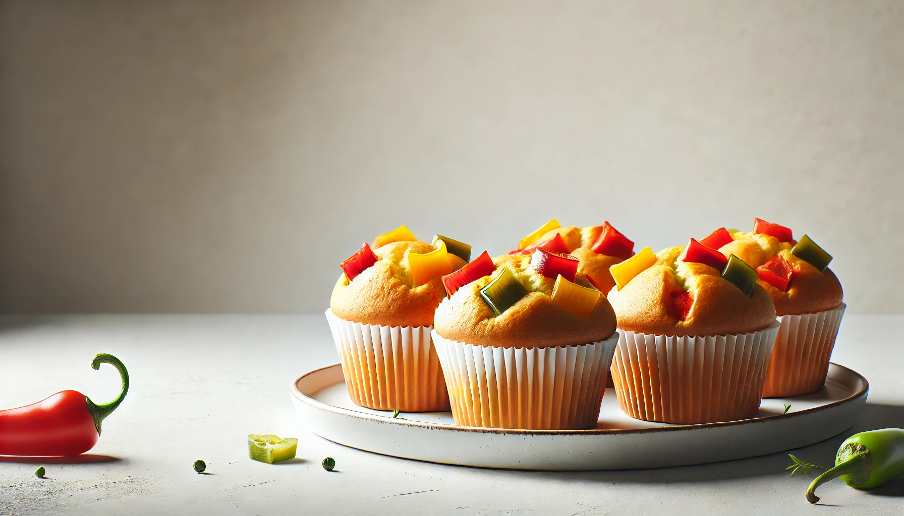
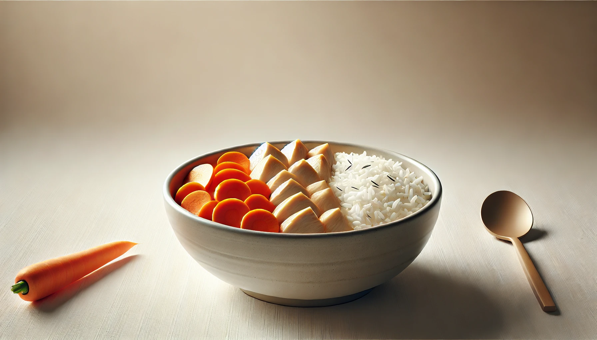
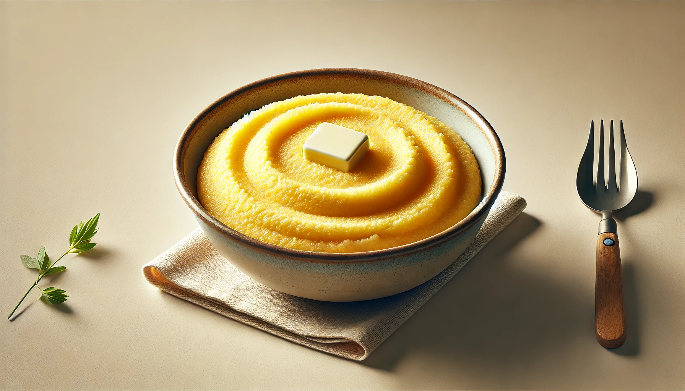
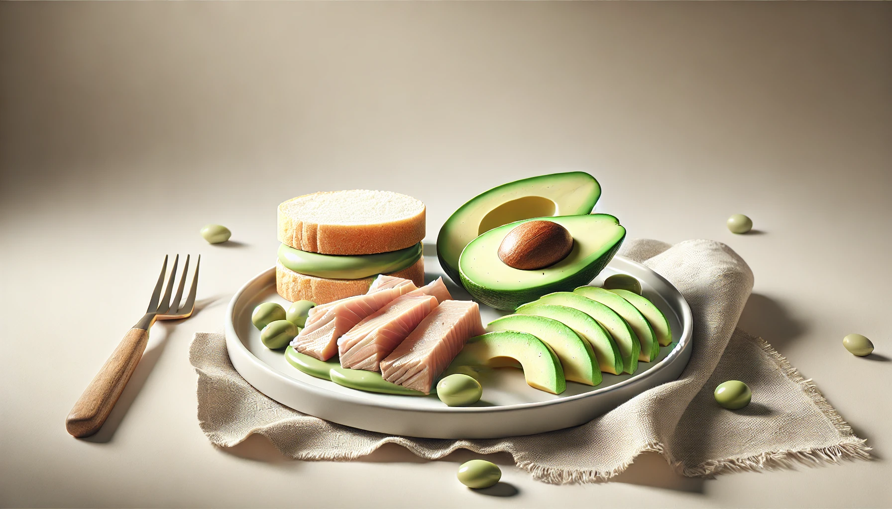
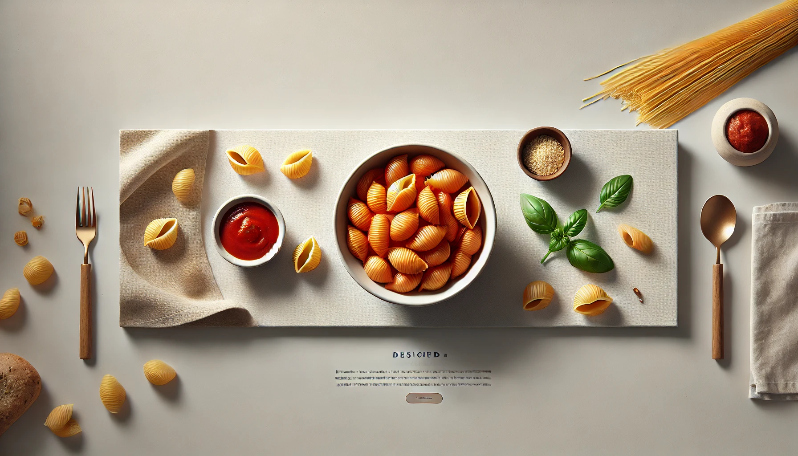
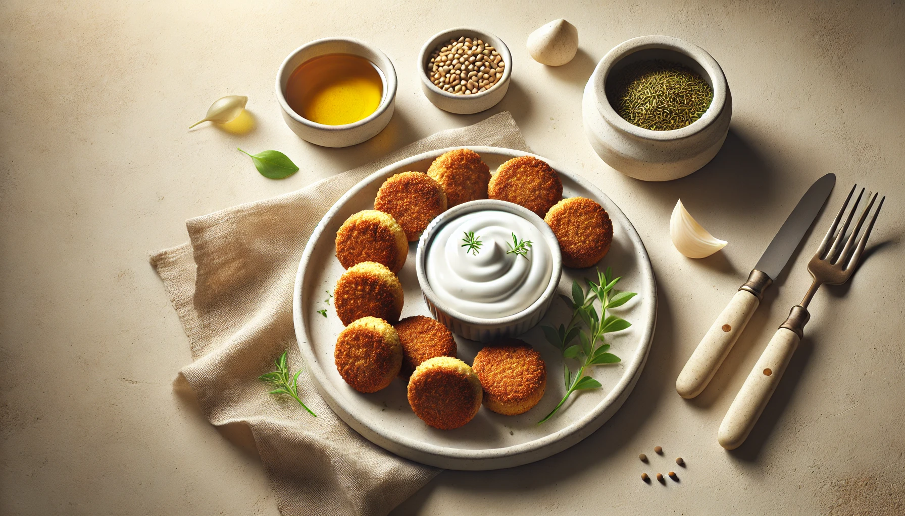
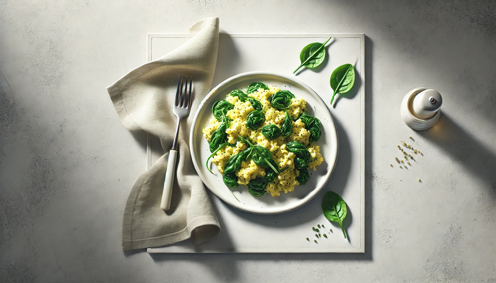

4-Week Toddler Dinner Plan
Week 3 | Nutrient-packed dinners for growing toddlers.
Comforting, colorful, and toddler-approved meals for stress-free evenings.

Dinner Recipe
Veggie Egg Muffins
Fun and perfect for tiny hands.
Ingredients
1 egg
1 tbsp finely chopped bell pepper or spinach
1 tsp milk
Instructions
1. Beat egg, add veggies and milk, and pour into muffin cups.
2. Bake at 180°C (350°F) for 15 minutes or until set.

Dinner Recipe
Chicken & Carrot Rice Bowl
Easy to chew, loaded with nutrients.
Ingredients
2 tbsp finely shredded cooked chicken
1 tbsp finely grated steamed carrot
¼ cup cooked soft rice
Instructions
1. Mix all ingredients well.
2. Add a splash of water or broth if needed to moisten.

Dinner Recipe
Cheesy Veggie Polenta
Comfort food with a creamy twist.
Ingredients
¼ cup cooked soft polenta
1 tbsp finely chopped steamed zucchini or spinach
1 tbsp shredded mild cheese
Instructions
1. Stir veggies and cheese into warm polenta.
2. Mix until creamy and smooth.

Dinner Recipe
Tuna & Avocado Mash on Soft Bread
Omega-3s with healthy fats.
Ingredients
1 tbsp canned tuna in water (drained)
2 tbsp mashed avocado
½ slice soft whole grain bread
Instructions
1. Mix tuna and avocado together.
2. Spread on bread or cut into small bites.

Dinner Recipe
Mini Pasta Shells with Hidden Veggie Sauce
A fun twist on a classic dish.
Ingredients
¼ cup cooked mini pasta shells
2 tbsp blended cooked vegetables (e.g., tomato, carrot, zucchini)
1 tsp grated cheese
Instructions
1. Mix the veggie sauce with pasta.
2. Top with cheese and serve warm.

Dinner Recipe
Baked Falafel Bites with Yogurt Dip
Plant-based protein made toddler-friendly.
Ingredients
¼ cup mashed chickpeas
Pinch of cumin (optional)
1 tsp oat flour or breadcrumbs
1 tbsp plain yogurt
Instructions
1. Form chickpea mash, cumin, and oat flour into tiny patties.
2. Bake at 180°C (350°F) for 10-12 mins.
3. Serve with plain yogurt for dipping.

Dinner Recipe
Scrambled Egg & Soft Veggies
A quick, protein-rich dinner.
Ingredients
1 egg
1 tbsp steamed finely chopped broccoli or spinach
1 tsp milk
Instructions
1. Beat the egg with milk and veggies.
2. Cook gently in a non-stick pan, stirring until fluffy.
Week 4 ☛ Here